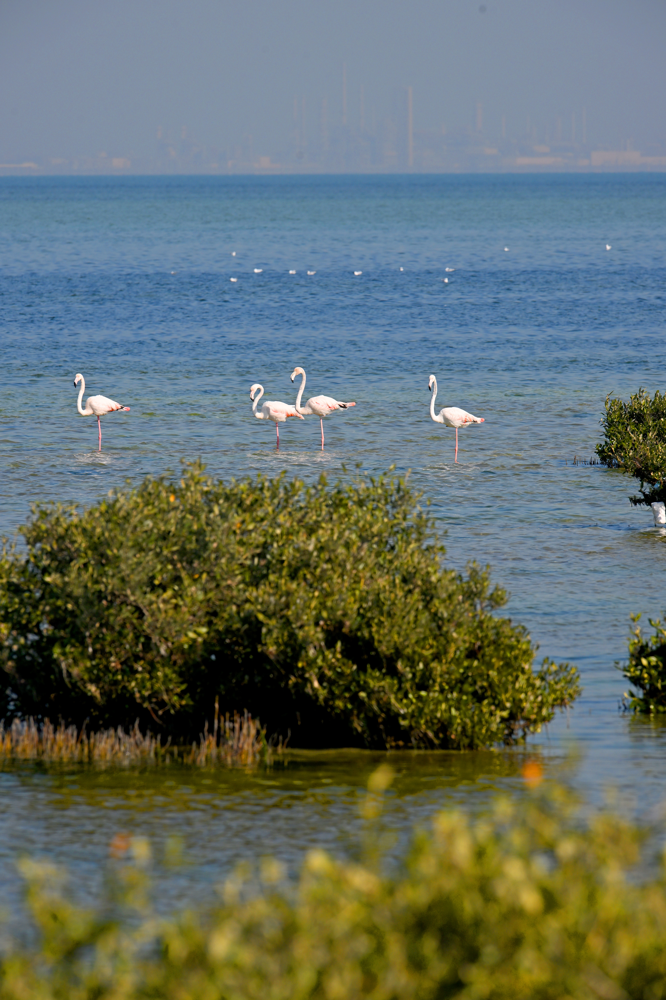
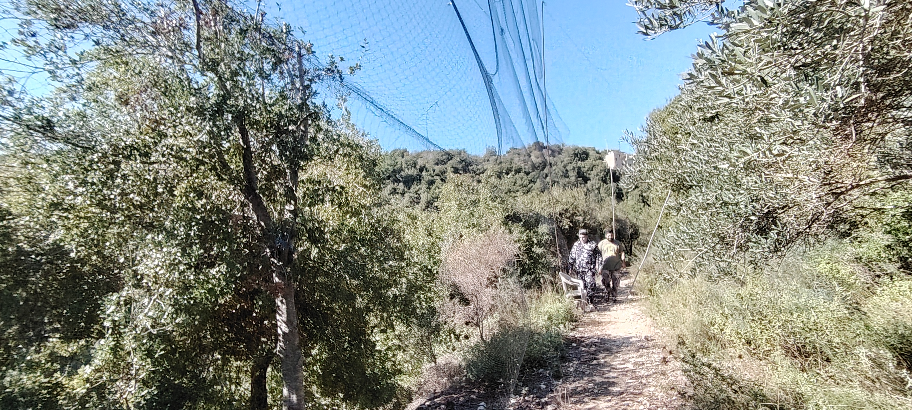

Un protocole commun documente filets, pièges, oiseaux blessés et morts et rassemble les observations de terrain dans une base de données partagée.
L’institut de recherche de la Tour du Valat a annoncé, le 17 novembre 2026, le lancement d’une plateforme numérique du Réseau des oiseaux d’eau en Méditerranée (ROEM). Elle rassemble des informations sur le suivi de la chasse illégale aux oiseaux d’eau dans huit pays : le Maroc, l’Algérie, la Tunisie, la Libye, l’Albanie, la Serbie, la Macédoine du Nord et la Turquie.
La plateforme repose sur un protocole commun permettant de consigner les observations de terrain et de les comparer entre sites et pays, afin d’identifier les foyers d’infractions et d’orienter la protection des oiseaux le long de leurs voies de migration.
Ce que relève le protocole
Le protocole intègre le suivi des indices de chasse illégale aux comptages hivernaux des oiseaux d’eau, en s’appuyant sur la présence des équipes dans les zones humides. Aux données sur le site, le moment et les conditions de la visite s’ajoutent des observations de chasseurs ou de coups de feu dans les lieux et aux périodes où la chasse est interdite, ainsi que de filets, de pièges et de dispositifs destinés à attirer les oiseaux.
La documentation comprend les restes de munitions, les nouveaux affûts lorsque leur illégalité peut être établie, ainsi que les oiseaux et autres animaux blessés ou morts, avec leur nombre et leur état. La fiche précise également si les faits ont été signalés aux autorités compétentes, pour faciliter le suivi des réponses apportées aux infractions.
Les visites sont aussi enregistrées lorsqu’aucun indice de ces pratiques n’est constaté. Cette méthode commune replace les observations dans leur contexte spatial, temporel et matériel, au lieu de réunir des faits isolés difficiles à comparer.

Des premières expériences à une base commune
Le programme de suivi a débuté en 2023. Son protocole s’est nourri de premières expériences menées en Tunisie, en Albanie et en Serbie. Les données sont intégrées à la plateforme au fur et à mesure de leur saisie sur le terrain, alimentant des synthèses nationales et à l’échelle du réseau, accompagnées de références spécialisées.
Les infractions couvertes comprennent la chasse d’espèces protégées, la chasse en dehors des périodes autorisées ou dans les zones interdites, ainsi que l’utilisation de techniques prohibées. Connaître la nature de ces pratiques, leur localisation et leur répétition aide à définir les priorités de surveillance et de protection.

L’atelier de Tunis et le partage d’expérience
Dans le cadre de la coopération régionale contre la mise à mort, la capture et le commerce illégaux des oiseaux, Tunis a accueilli, du 16 au 18 octobre 2026, un atelier organisé par l’Association Les Amis des Oiseaux en Tunisie et la Société de protection et d’étude des oiseaux de Serbie, dans le cadre des projets PROZHUM.
Selon la Société libyenne pour les oiseaux, qui y participait, la rencontre a réuni des organisations et associations de pays arabes et européens, dont le Liban. Les participants ont présenté leurs expériences de suivi, de documentation, de sensibilisation et de coopération avec les autorités compétentes. La présentation libyenne a porté sur la législation nationale et les efforts de protection des oiseaux.
Le programme comprenait des visites de terrain à Sebkhet Soliman et Sebkhet Korba, en Tunisie, associant observation des oiseaux d’eau et documentation d’indices de mise à mort illégale. Cette pratique montre qu’une visite consacrée au comptage des oiseaux peut également renseigner sur les menaces pesant sur leurs sites de repos et d’alimentation.
Tour du Valat — ROEM · ROEM — Monitoring protocol · Libyan Society for Birds — Tunis workshop
Photos : Arabie saoudite — SPA ; Tunisie — Skander zarrad / Wikimedia Commons (ces deux photos sous CC BY-SA 4.0) ; Liban — MECSHAP. · 1 · 2 · https://creativecommons.org/licenses/by-sa/4.0/